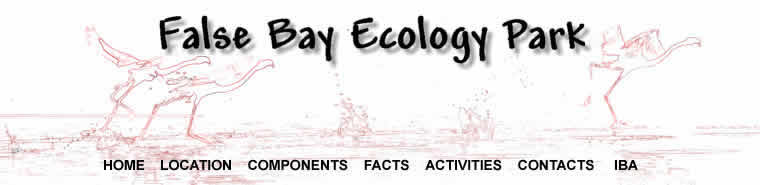
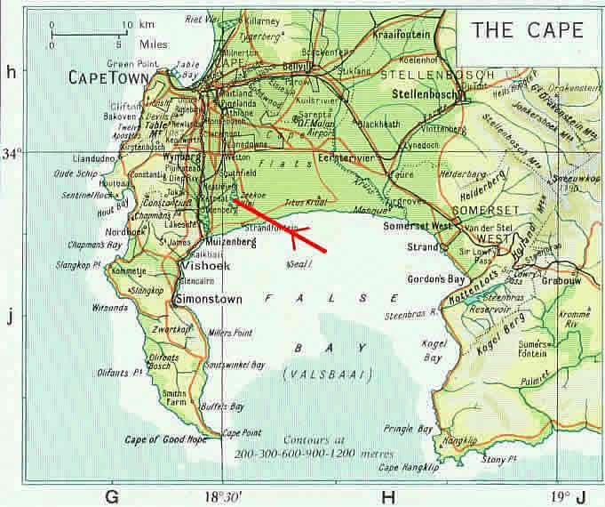
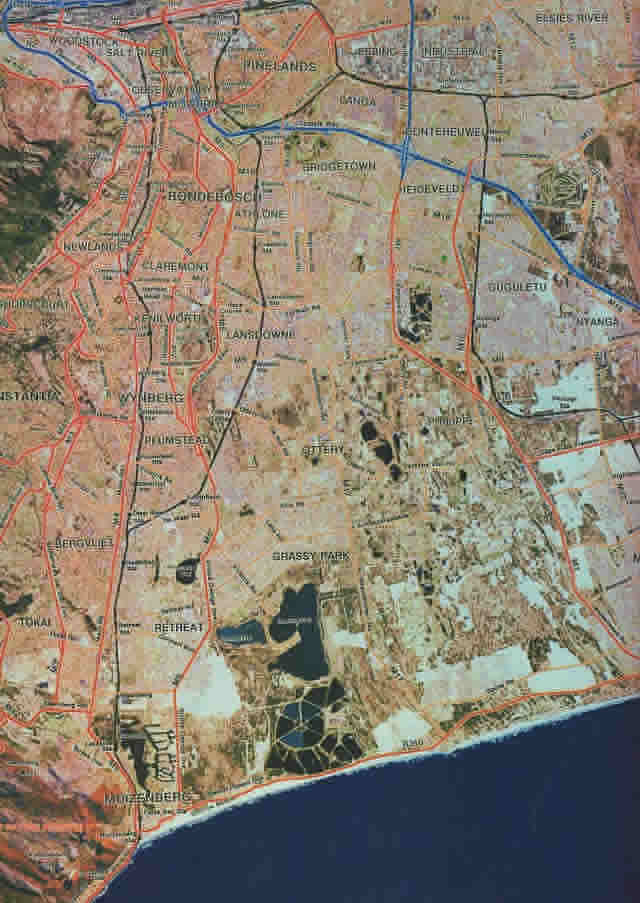
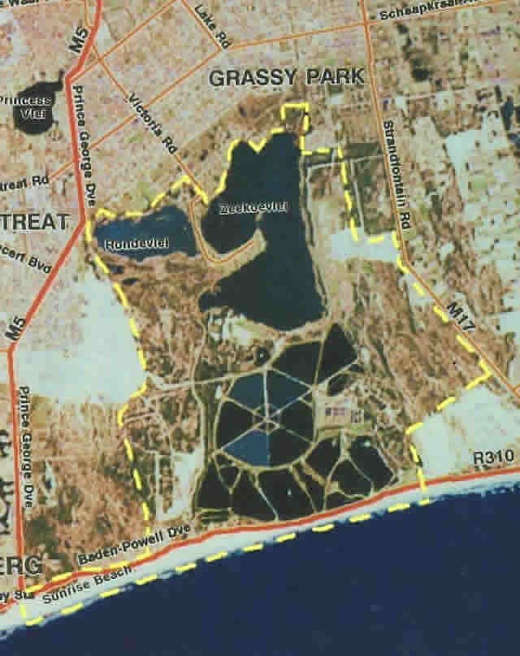

 LOCATION MAP 1 The False Bay Ecology Park is located in Cape Town's Southern Peninsula at  Location Map 2 A Satellite view of the Southern Peninsula showing the main roads in red, The water bodies of Zeekoeivlei, Rondevlei and the Cape Flats Waste Water Treatment Works group,
 Location Map 3 An enlargement of the satellite view showing the approximate extent of the  As may be seen from the above enlargement, the False Bay Ecology Park has been reduced The only external linkages are along the coastal strip East to the Wolfgat Nature Reserve and |